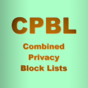
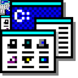

If you are on a mobile device the easiest way to use my block lists is via a DNS resolver or mobile application.
My block lists can be utilized via DNS-over-TLS, DNS-over-HTTPS, and Apple MobileConfig files (thanks to Rethink DNS).
They are also available as options within Blokada's cloud services and applications. Continue reading for more information.
If you are on a desktop operating system, then you can take advantage of the tools I created to generate my block lists. There are configurable script utilities and programs available at my GitHub repositories, which are meant to work out of the box on GNU/Linux, BSD, MacOS, and Windows (both natively and through Cygwin). There are block lists for a wide variety of purposes at these locations too (hosts, PAC, ABP, uBO, P2P etc...):
CPBL
(Block List Tools for Unix-like OSes)
 |
CWPU
(Privacy Utilities for Windows)
 |
Finally, you may utilize my block lists with a DNS service (the simplest option for mobile devices):
Android (10 and up, enter under Private DNS)
"1-eaaacaa.max.rethinkdns.com" (Full)
"1-iaabaaa.max.rethinkdns.com" (Mini)
iOS (MobileConfig files also work on MacOS)
Full List DNS Settings (download & install)
Mini List DNS Settings (download & install)
Additionally, there are full-fledged mobile applications and cloud solutions which offer my lists OOTB, like Rethink, and Blokada, along with browser extensions, and a plugin for OpenWrt | Don't forget to wash your hands after using the toilet, and remember to drink water every day!